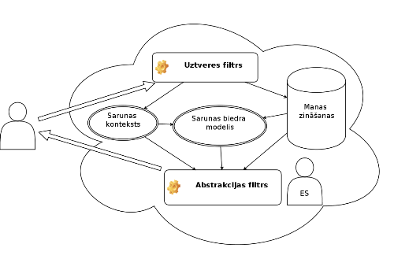

Lietojamība sarunās
 2012-01-31
2012-01-31
 12:44:21
12:44:21

Domāju, ka tas, par ko es šeit rakstīšu, ir kaut kur zinātniski aprakstīts un nosaukts kādā smalkā vārdā, bet es to šajā gadījumā saukšu par lietojamību.
Pēdējā laikā darbā sanāk arvien vairāk runāt ar pazīstamiem un nepazīstamiem cilvēkiem dažādās situācijās, kas mani pamudināja papētīt cilvēku iemaņas un spējas sarunāties, komunicēt savā starpā. Tā kā līdz šim darbā ļoti daudz nākas saskarties ar terminu lietojamība, it īpaši saistībā ar datorprogrammu lietotāja saskarņu veidošanu, tad es automātiski sāku uz sarunu lūkoties no lietojamības aspekta. Būtībā izkristalizējās galvenais jautājums:
“Cik lietojama ir mana sarunu saskarne?”
Ko es ar to saprotu? Šo jautājumu es varētu sadalīt vairākos paskaidrojošos jautājumos:
- kā es izprotu to, ko man saka?
- vai es spēju pielāgoties sarunas biedra runas īpatnībām?
- cik labi es spēju pielāgoties vārdu krājumam un atbildēt saprotami?
- vai es spēju saprast sarunas biedra nostāju attiecībā pret šo sarunu?
- cik precīzi es varu noteikt sarunas biedra zināšanas par konkrēto jautājumu?
- u.t.t.
Es šajos jautājumos saskatu divus caurvijošus terminus – uztveri un abstrakciju. Manā prātā šī saruna veidojas kā diagramma

Ir vēl daudz un dažādas kastītes, kas tur nav sazīmētas, bet šeit ir parādīti manuprāt svarīgākie elementi. Balstoties uz šādu shēmu, manā prātā veidojas saruna. Es
- dzirdu, ko man saka
- piefiksēju pateikto
- ņemu vērā:
- ko es zinu par šo cilvēku
- par ko ir runa
- balstoties uz zināšanām pieņemu, ka šis cilvēks zina to un nezina šito
- noformulēju atbildi
Un pa lielam man šķiet, ka tā ir spēja abstrahēties, spēja pielāgoties sarunas biedram. Protams, sastopoties ar krietni pārāku cilvēku zināšanu līmenī, ir jāņem tas vērā un jāpieņem, ka ir iespējams neuztvert daļu sarunas tieši zināšanu trūkuma dēļ. Bet, ja paveicas ar sarunas biedru, tad tas spēs pielāgoties manam zināšanu līmenim un saruna ritēs gludi.
Šo aprakstīt mani pamudināja novērojums, ka liela daļa cilvēku komunikācijā nepievērš uzmanību sarunas biedram un tad rodas situācijas, kad par vienu un to pašu tematu var bezjēdzīgi runāt stundu, jo katrs runā “savā valodā”, necenšoties izprast pretējo pusi. Līdzīgi kā datorprogrammu lietotāja saskarne, arī katra cilvēka personīgā māka sarunāties ir kā saskarne, kuru citi cilvēki lieto. Līdz ar to ir jāpadomā par šīs saskarnes lietojamību!
divi komentāri
 cuu508
cuu508
Šitās sarunas, kur katram galvā kaut kas cits, un visi gudri, man atgādina 
:-)
aiznjemtais
vispār ļoti sarežģīts un arī interesants topiks. Radās dažas pārdomas lasot lasot šo ierakstu. Principaa, vai saruna ritees gludi, arī ir ļoti atkarīgs no tā, vai abi cilvēki ir ieinteresēti viens ar otru sarunāties, lai tiktu līdz sarunas “layer’am”. Bieži vien vajag tieši abstrahēties no tā, ko zini/domā par konkrēto cilvēku, lai pareizi saprastu, ko viņš grib pateikt. Sanāk tā – ja es gribu ar tevi sarunāties, bet tu ar mani nē, tad tava lietojamības saskarne ir ļoti slikta? Tas, protams, mazāk attiecas uz sarunām darba jautājumos, jo tad īsti nevari izvairīties no sarunas, turklāt nākas to darīt pēc augstāk stāvošas personas sarunu mašīnas noteikumiem. Kāds nu kuram tas lietojamības runtime ir uzinstalēts… Tāpat kā Java, teorētiski vajadzētu strādāt uz visām platformām, bet versiju un situāciju ir tik daudz…
 Mana personīgā mobilā vēsture
Mana personīgā mobilā vēsture